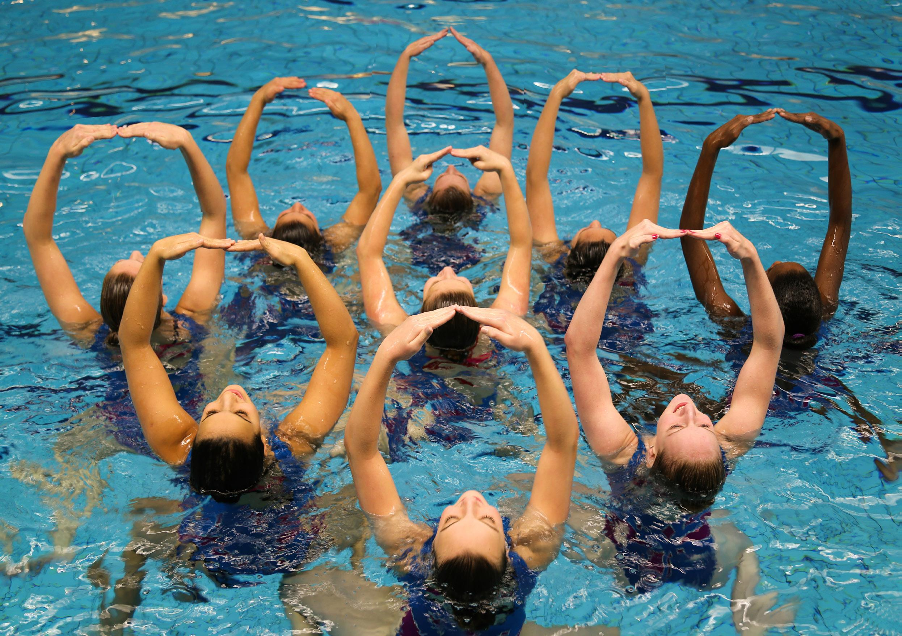

Synchroonzwemmen

Synchroonzwemmen/artistiek zwemmen is een watersport. "Synchroon" betekent "gelijk".
De sport is tegenwoordig een vrij exclusief vrouwelijke aangelegenheid, hoewel het oorspronkelijk door mannen werd geïntroduceerd.
De sport wordt ook wel "kunstzwemmen" of "waterballet" genoemd, dat laatste vooral vanwege de overeenkomsten met ballet.
Het is een sierlijke, maar zware sport want men moet niet alleen de vier zwemslagen beheersen, maar ook gevoel voor ritme hebben.
Een groot deel van de figuren wordt onder water uitgevoerd.